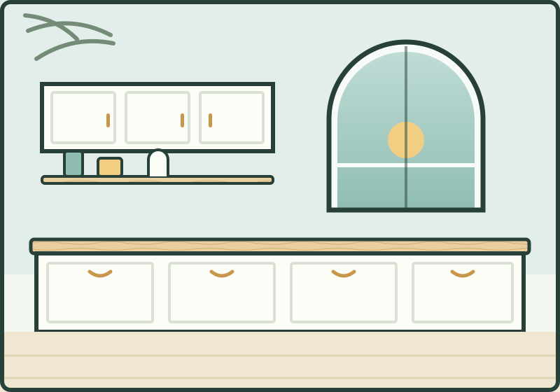
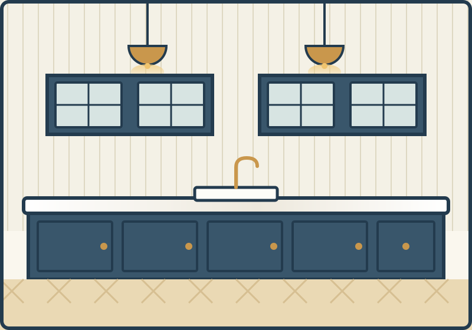
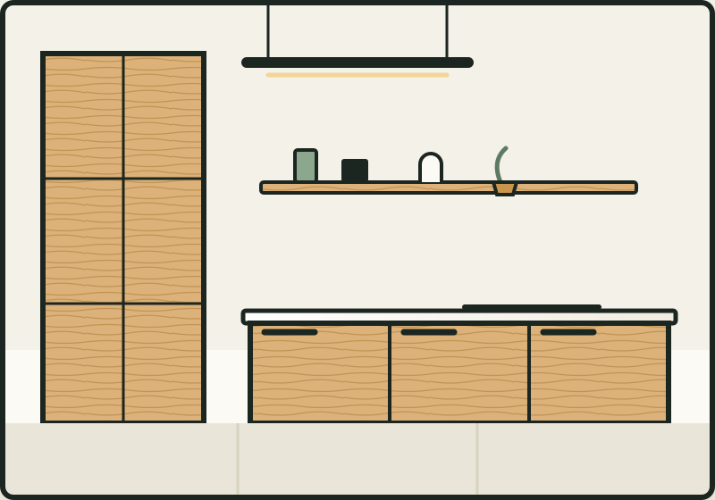
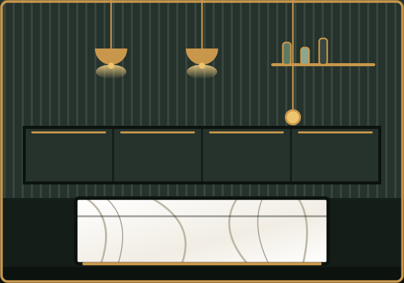
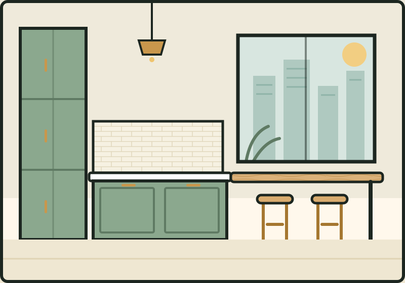
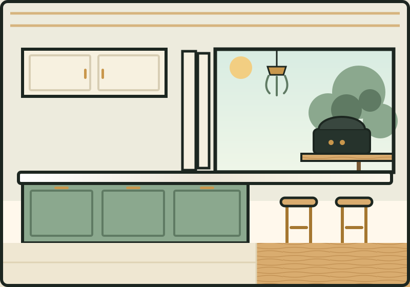

Coastal white kitchen
Palm BeachA Full Reno built around one non-negotiable: the arched window over the sink had to stay. Crisp white shaker fronts, a raw-oak benchtop and brass cup pulls keep it beachy without a surfboard in sight.
Project gallery
Every project below is a fixed-price Sunline package — designed by Dana & Priya, installed by Marco, and still getting care visits today.

A Full Reno built around one non-negotiable: the arched window over the sink had to stay. Crisp white shaker fronts, a raw-oak benchtop and brass cup pulls keep it beachy without a surfboard in sight.

Deep-blue shaker cabinetry under a thick-edged stone bench, with glass-front overheads for the good crockery. VJ panelling and classic dome pendants finish a Luxe package that feels like it was always there.

Flat oak slab fronts, routed finger pulls and not a handle in the room — storage for a family of five hidden behind one calm timber wall. A Full Reno that proves minimal doesn't mean small.

Charcoal fluted cabinetry, a waterfall island in boldly veined stone and three brass pendants on dimmers — our Luxe package turned all the way up. The owners host long lunches most weekends now; we take zero responsibility.

Seven square metres, twelfth floor, no room for error. A ceiling-height storage wall, slimline appliances and an oak bar return give a one-bedder apartment a kitchen that out-cooks most houses.

One long stone bench runs straight through a bifold servery window to the deck, with stools on the outside and the barbecue three steps away. Built for a family who feed half the valley every Sunday.
Real project photos drop straight into this page for live clients — illustrations shown in the demo.